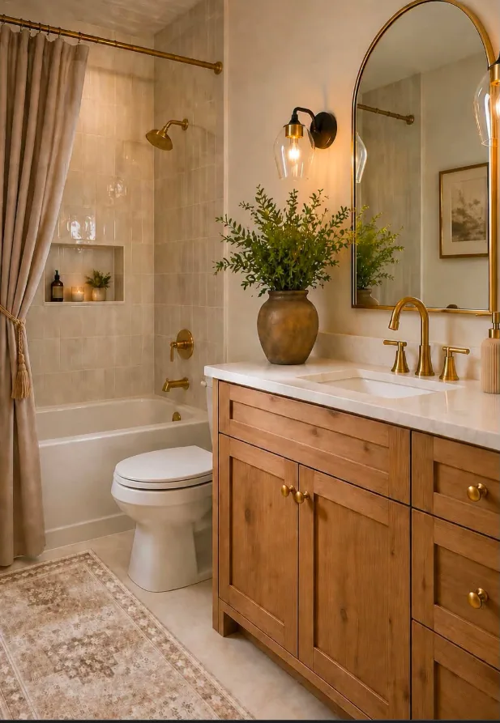
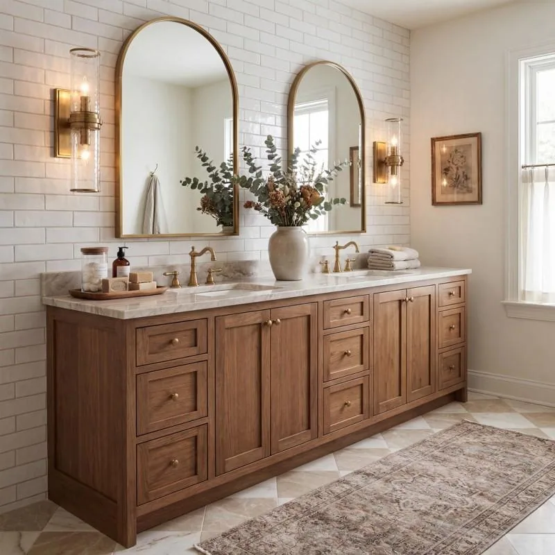

Bathrooms
Needs
- Water on/off valves accessible for all sinks and toilets
- Timer switch for the exhaust fan in every bathroom
- Built-in night lighting in every bathroom, including powder rooms and all upstairs bathrooms. Provide a dim, warm light usable without the main lights, preferably automatic dusk/motion operation. A switch-integrated night light, illuminated receptacle or low-level vanity/toe-kick light are options; final product, location and controls remain undecided. Coordinate with the electrician, required GFCI protection and wet-location restrictions.
Ground-floor powder room
The newly exposed upper-flight edge also receives matching black bars/posts and a 36-inch oak flight handrail over x=7.45–10.008333 ft, z=34.841667, joining the existing upstairs guard at y=13 ft. Ground rails alone cannot protect that elevated flight. Treads and landings remain fixed; remaining handrail/guard omissions still require professional resolution.
Stair-side alcove wall correction: the circled ground-floor wall extension at z=35.1 ft, x=7.45–12.2 ft is now a 57-inch-long, 42-inch-high black horizontal guard. Powder privacy walls, 4.2-inch jamb-side return and 30 × 96-inch doorway/casing remain. The alcove floor and stair geometry are unchanged; see guard dimensions, circulation and engineer-review limits. Horizontal styling is conceptual, not code/climbability approval; previous stair handrail omissions remain unresolved.
Powder privacy and upstairs bathroom windows use white drywall returns and white opening-width sills, 1 inch thick and 6 inches from interior frame face to front flush with the fixed room wall. Privacy glazing and opening sizes/positions remain unchanged. Frames move outward only in depth with solid installation allowances; structure, insulation/condensation, waterproof joints, anchorage, flashing/drainage and the privacy treatment require professional/manufacturer review. See window installation holds.
Modeled vanity cupboard doors and drawers on both floors open/close when clicked, including attached knobs. Ground-floor drawer boxes extend 15 inches; cupboard doors swing outward 90 degrees. Reload restores closed fronts. Display operation does not establish clearance to room doors, people, plumbing or appliances; close fronts before using the route and verify actual hardware.
Use the same 7-inch engineered hardwood flooring as the adjoining hall, not tile. Confirm the selected product's bathroom-use warranty, moisture protection and installation details.
Enter from the common hall through a shared guest-entry alcove, not through the kids' room or coat closet. Powder bounds remain x = 0-7.1 ft, z = 35.1-41 ft. The arrangement is mirrored toward the office-shared south wall, without changing the office. Its 30 × 96-inch east-wall opening is now z = 35.6-38.1 ft. The painted-white door hinges at the north jamb, shown 90 degrees inward by default; click to toggle closed or to the 180-degree conceptual endpoint. Actual stops and occupied circulation remain unverified.
Centered reference-style vanity: retain the 42 × 21-inch oak Shaker vanity, now at (4.75, 39.875), facing north from the office-shared wall. Center the sink, faucet and round brass mirror on the actual counter midpoint, with equal counter space and symmetrically placed sconces. A 22-inch center sink cupboard has two doors; matching 10-inch drawer banks flank it, three narrow toiletry drawers per side, with small satin-gold knobs. Keep the existing oak finish, single half-frosted window and towel hook.
Retain the modeled 15-inch drawer extension. Close all drawers before moving the entry door or entering: the entry-side bank can intersect its sweep. Fit the trap, bowl, slides, usable drawer interiors and hardware with the cabinet supplier before fabrication.
The east-wall brass towel hook is now at z = 38.85 ft, 48 inches above the floor, south of the entry casing. The southwest toilet (1.65, 39.65) faces north. Retain the low stone backsplash, shared hardwood and independent low-level night-light concept.
Taller single privacy window: use one centered west-wall Andersen 100 Series standard-size 2640 casement at (0, 38.05), now modeled in a 2.5 ft wide × 4 ft tall minimum rough opening. Its bottom is 4 ft above the floor and top 8 ft, matching the door heads. The lower half stays frosted to 6 ft; upper half clear, with white inside/black outside. The manufacturer's 2024-25 size chart (dealer-hosted copy) gives an approximately 2.4583 × 3.9583 ft frame; the model uses this separately from the wall cut, with frame sill/head approximately 4.0208/7.9792 ft. Confirm the half-frosted treatment, actual sightlines/night privacy, handing, safety glazing, installation allowances and weatherproofing; standard dimensions are verified, not the complete product or installation.
The mirrored toilet retains a separate 30-inch-wide × 30-inch-deep forward approach beside the vanity, with approximately 42.3 inches from the bowl front to the north wall. Recheck actual door/frame clear width and occupied use; this geometry study is not accessibility approval.
A separate reach-in guest coat closet opens into the same alcove. The office north wall stays at z = 41; stairs, exterior footprint and room boundaries are unchanged. The new guard-to-closet-wall baseboard depth is 38.43 inches before local casing and door operation. Verify actual door/frame clear width, fixture and door-sweep clearances, basin construction, plumbing, exhaust, structure, lighting and electrical zones before construction. See the guest-entry model view and current reference.
Guest-bedroom shower bathroom
All bathroom doors have 96-inch heads. The guest shower has no door: fixed splash-glass panels flank a 30-inch open walk-in entrance. The glass is modeled 96 inches tall above the curb; verify actual panel sizing, safety glazing, mounting and water containment with the supplier.
October 27 layout shift: translate the entire bathroom 1 ft north, without resizing or changing fixture spacing. Move the walk-in 1.2 ft south so both bedroom-facing partitions align at z43.2. Relocate the hall bedroom entry to z43.8-46.8. Shell, hall width, queen bed and nightstands remain fixed. Kids gain a net 2.65 sq ft; their desks/chairs move 1 ft north to clear the bathroom.
The bathroom is x=25.75-31.2, z=33.6-43.2, nominally 5.45 × 9.6 ft. Shower is x25.95-31, z33.8-37, with 58.2 × 36 inches between curb interiors and a 30-inch south-facing open entrance. Toilet center (29.9,38.5) faces west: 18 inches to the shower curb north and 19.44 inches to the vanity counter south. A 26-inch geometric route connects bedroom, toilet approach and shower with drawers closed and pocket entry open. Step-over curb, not accessible access; sanitary and occupied-use approval remain outstanding.
East-wall vanity at (30.15,41.4) faces west: 30 × 18-inch natural white-oak Shaker concept, paired left doors and a 12-inch right three-drawer bank. The actual 14-inch basin, cutout, tailpiece and faucet are centered on the whole counter, matching the 24-inch mirror. A small white soap bottle with gold pump sits on the counter's right strip. Retain pale stone, gold bar pulls, 2700 K sconces and night light. To clear the centered bowl, divider top is lowered to 28.8 inches and upper drawer box is shallow (1.92 inches high); its front and 15-inch travel remain. Bowl underside is 29.4 inches above floor, upper box top 26.1 inches. Left bay remains 16.875 inches wide, 17.25 inches deep, with continuous floor, recessed plinth and removable hollow 10 × 10 × 14-inch basket resting 4.215 inches above floor. The 12 × 12 × 18-inch reservation clears the schematic high/rear plumbing. Open both cabinet doors 90 degrees for straight basket extraction. Close doors/drawers before through-access; close drawers before bathroom entry-door swing. Closed fronts leave about 38.7 inches to west trim, 23.7 inches extended. Actual basin, trap, cabinet supports, shallow drawer and hardware need supplier approval; finish is a screen approximation, not a selected product.
The southwest bathroom entry remains 28 × 96 inches, x26.2-28.5333, z43.2, now a regular white Shaker door with gold knobs, west-jamb hinge, inward 90-degree stop and closed default. The old bathroom pocket and cavity are removed. Full sweep clears modeled fixtures with vanity fronts closed; close drawers before swinging the room door, since extended fronts enter its sweep. Keep fronts closed for the 26-inch route to toilet/shower. Timber trim stops behind wet/fitted fixtures. Towel hook remains (26.05,38), 48 inches high; north nightstand still has only 17.73 inches to wall trim, not an aisle. Verify door hardware, sanitary/occupied clearances, fire separation, waterproofing, electrical and exhaust. No tub or construction approval.
NKBA planning guidance recommends at least a 36 × 36-inch shower interior and 30-inch clear space in front of fixtures; the modeled 36-inch shower depth meets that cited baseline, not code or product approval. See also KOHLER shower sizing. Nominal product sizes are not finished-clear dimensions. Verify actual open-entry clearance, occupied use, accessibility, splash control, water containment, waterproofing, plumbing, exhaust, night lighting and garage fire separation. Explore the guest suite.
Master Bathroom
Wants
- Built in tub, not too tall. Shower can be next to the tub. Windows by tub.
Inspiration
Use light natural-stained white oak for all vanities and linen cabinets, with Shaker doors and drawer fronts, frameless full-overlay construction, and satin-gold handles to match the cabinetry throughout the home. Confirm the stain and moisture-resistant protective finish on physical samples.


Current window product intent: all bath/powder windows are White Fibrex Andersen 100 Series, no grilles. Obscure/patterned glass exists in the official guide, but the modeled lower-half powder frosting is not a verified factory option. Confirm privacy treatment, safety glass, actual sizes, reach and ventilation before ordering; see window ordering holds.